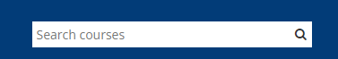
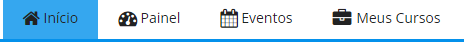
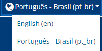

Guia de Estilo
1. Introdução
Este guia de estilo visa reunir princípios e diretrizes através de uma documentação. É documentada as decisões de design de forma que sejam utilizadas no processo de contrução do produto final em difentes ambiente, como por exemplo a plataforma utilizada.
1.1 Objetivo
O guia de estilo tem como objetivo principal a comunicação entre equipes de design e equipes de desenvolvimento do produto. Sendo assim, de grande relevância que o guia de estilo esteja de fácil entendimento para consultas sobre próximas versões e extensões do produto.
1.2 Organização e conteúdo
A organização desse guia de estilo será baseada nas estruturas recomendadas por Marcus (1992) e Mayhem (1999).
1.3 Público-alvo
O público-alvo deste guia de estilo é a equipe de avaliadores, desenvolvedores, suporte e de design do website, assim como os integrantes do Grupo 7 (Aprender3) que utilizarão o guia para fututos desenvolvimentos e documentações.
1.4 Como utilizar
Para utilizar este guia, basta seguir os tópicoe informações disponibilizadas. Utilizando sempre os elementos citados e seguindo as regras necessárias propostas nele.
1.5 Como manter
Para manter o guia, deve-se levar em conta os fundamentos de IHC para obter uma usabilidade de qualidade. Este guida visa melhorar a plataforma utilzando fundamentos e conhecimentos nesta área. Mesmo realizando refatorações neste documento, estas mudanças seguirem os princípios básicos, é o caminho correto. Caso contrário precise de material para se aprofundar neste conteúdo, verifique osconteúdos citados no tópico de bibliografia do final do documento.
2. Resultados de análise
2.1 Layout
Como é possível ver na imagem 1, a estrutura do site é dividida em 5 partes:
- Barra de navegação;
- Cabeçalho;
- Coluna;
- Miolo;
- Rodapé.
2.2 Paleta de cores
Para desenvolver o site, foi utilizado como base a paleta de cores descrita no manual de identidade da UnB. Na imagem 2, é possível ver a paleta de cores do Aprender 3 gerada pelo site Coolors.

2.3 Tipografia
O site utiliza as fontes Kollektif e Core Sans.
2.4 Ícones
| Ícone | Descrição |
|---|---|
 |
Eventos: Ícone para levar à página de próximos eventos, como tarefas e provas. |
| Idioma: Lugar para mudar o idioma do site. | |
 |
Início: Leva para a página inicial do site. |
 |
Mensagens: Onde possui todas as mensagens enviadas e recebidas do usuário. |
 |
Meus Cursos: Mostra todos os cursos do usuário. |
 |
Notificações: Notificações do usuário. Quando há notificações não lidas, aparece um contador vermelho no ícone. |
| Ocultar blocos: Mostra ou esconde coluna da direita do site. | |
 |
Painel: Painel com cursos do usuário. |
 |
Visualização Padrão: Aumenta ou diminui o layout. |
3. Elementos de ação
Neste tópico será apresentado os elementos de ação presentes na plataforma Aprender 3.
3.1 Preenchimento de campos
A finalidade é de que o usuário possa preencher com informações para atingir um objeitov, fazer alguma alteração e até mesmo com informações pessoais.
3.1.1 Login na plataforma
O primeiro preenchimento de campo que observamos é logo ao entrar na plataforma que já é solicitado o login do usuário antes de ter acesso a qualquer informação.

3.1.2 Procursa de turmas
Já dentro da plataforma, existe um campo em que é possível procurar por uma turma/ disciplina desejada.

3.1.3 Modificar Perfil
Na plataforma é possível encontrar diversos campos disponíveis para o usuário modificar seu perfil, como por exemplo: nome, sobrenome, endereço de email, etc.

3.1.4 Senha
Para se matricular em uma turma é exigido uma senha que é disponibilizada pelo docente da disciplina.

3.2 Seleção
As opções de seleção e opções da plataforma disponíveis para o usuário.
3.2.1 Menu
Logo na página inicial há um menu de seleções onde posso selicionar: início, painel, eventos e meus cursos.

3.2.2 Meus cursos
Apertando meus cursos no menu de seleção obtemos as turmas cadastradas do usuário onde é possível selecioná-las.
3.2.3 Chat
É possível selecionar um chat de mensagens com outros usuários na plataforma.

3.2.4 Linguagem
É possível selecionar a linguagem que o usuário deseja na plataforma dentre as opções possíveis.

3.2.5 Notificações
O usuário recebe uma notificação sempre que algo é alterado ou adicionado nas turmas em que faz parte, e assim selecionar a notificação desejada que irá ser exibida pela plataforma.

3.2.6 Opções do perfil
Quando é selecionado o perfil, é aberto um menu de diversas seleções que o usuário pode interagir.

3.3 Confirmação
As ações de confirmação está indiretamente ligadas com as ação de campos de preenchimento. Como citado acima, é visível que na figura 1 de login na plataforma, é preciso confirmar logo após preencher os campos de login para dar continuidade a ação. Como também na figura 4 para confirmar a senha é preciso apertar o botão e assim se sucede por toda a plataforma.
4. Vocabulário e padrões
4.1 Terminologia
A plataforma tem um vocabulário de fácil entendimento e nada que fuja do entendimento do usuário. Sendo assim a terminologia é compreensível.
4.2 Tela
A plataforma dá liberdade para que o usuário escolha a tela padrão de sua preferência, escolhendo tamanho da fonte e uma paleta de cores.

5. Bibliografia
Barbosa, S. D. J.; Silva, B. S. da; Silveira, M. S.; Gasparini, I.; Darin, T.; Barbosa, G. D. J. (2021) Interação Humano-Computador e Experiência do usuário. Autopublicação. ISBN: 978-65-00-19677-1.
6. Histórico de Versão
| Data | Versão | Descrição | Autor | Revisor |
|---|---|---|---|---|
| 09.12.2022 | 1.0 | Criação do arquivo | Milena Aires | Raphaela guimarães |
| 11.12.2022 | 1.1 | Adicição do tópico de introdução e elementos de seleção | Milena Aires | Raphaela Guimarães |